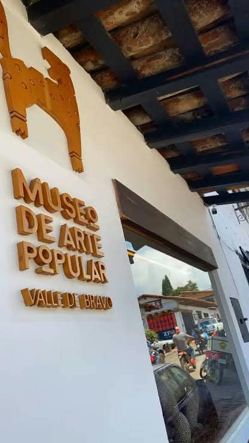
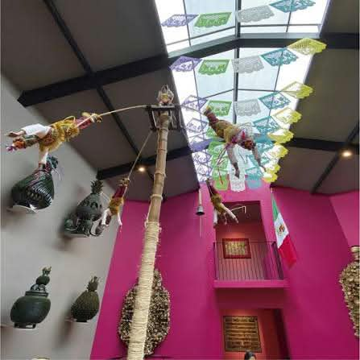

El Museo de Arte Popular de Valle de Bravo es un pequeño museo especializado en arte popular mexicano, ubicado en el centro histórico de este Pueblo Mágico del Estado de México. El vídeo muestra un recorrido por sus salas, con piezas coloridas de artesanía tradicional (animales tallados, máscaras, figuras, textiles, cerámica, etc.).

Exhibe y conserva el legado de la Fundación Mama Viña y Oscar. Su objetivo es impulsar el conocimiento y reconocimiento del arte popular mexicano como patrimonio colectivo, así como el patrimonio cultural de los grupos étnicos de Valle de Bravo (especialmente mazahuas y otomíes). También organiza actividades culturales, sociales y educativas para transmitir ese legado. Se diferencia del famoso Museo de Arte Popular (MAP) de la Ciudad de México. Este de Valle de Bravo es más pequeño, más reciente y de carácter privado/fundacional, con una museografía muy cuidada y visitas guiadas personalizadas.

El museo forma parte de una “ruta del arte” local que incluye el Mercado de Artesanías, el Centro Ceramista de Otumba y espacios independientes. Es un complemento cultural ideal a las actividades al aire libre del pueblo. En resumen, es un museo pequeño pero de gran calidad, ideal para conocer la diversidad y riqueza del arte popular mexicano de manera cercana y guiada